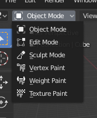

Các Mode của Object¶

Menu chọn Mode.¶
Các mode cho phép chỉnh sửa những khía cạnh khác nhau của object. Trong khi Object Mode cho phép bạn định vị/xoay/co giãn chúng, thì Edit Mode cho phép thay đổi hình học của chúng, Pose Mode cho phép tạo dáng cho chúng, v.v.
Bạn có thể thay đổi mode hiện tại bằng bộ chọn Mode trong header của 3D Viewport. Những mode nào khả dụng tùy thuộc vào loại object. Danh sách đầy đủ được hiển thị bên dưới.
Ngoài việc dùng bộ chọn, bạn cũng có thể nhấn Ctrl-Tab để mở một pie menu quanh con trỏ chuột nhằm truy cập nhanh hơn. (Nếu object đang chọn là một Armature, phím tắt này sẽ chuyển qua lại giữa Object Mode và Pose Mode.)
Nhấn Tab sẽ bật/tắt Edit Mode đối với những object hỗ trợ mode này.
Các mode có thể ảnh hưởng đến nhiều thứ trong Blender:
Mỗi mode thay đổi header và Toolbar để hiển thị bộ menu và công cụ riêng của mình. Điều này cũng có nghĩa là nó ảnh hưởng đến các phím tắt khả dụng.
Các mode có thể thay đổi hoàn toàn diện mạo của viewport. Ví dụ, Weight Paint mode sẽ tô bóng object để hiển thị vertex weight của nó — thứ vốn thường không nhìn thấy được.
Các mode có thể ảnh hưởng đến các editor khác. Ví dụ, UV Editor chỉ có thể được sử dụng khi 3D Viewport đang ở Edit Mode. Tương tự, trong editor Properties, một số nút và panel chỉ có thể dùng ở một số mode nhất định.
Danh sách các Mode của Object¶
Biểu tượng |
Name |
Details |
|---|---|---|
|
Mode mặc định, khả dụng với mọi loại object. Cho phép chỉnh sửa vị trí, góc quay và tỉ lệ, duplicate object, v.v. |
|
|
Mode để chỉnh sửa hình dạng của object (vertex/edge/face đối với mesh, điểm điều khiển đối với curve/surface, điểm/stroke đối với Grease Pencil, v.v.). |
|
|
Cung cấp một bộ công cụ thay thế để chỉnh sửa hình dạng của object (chỉ dành cho mesh). |
|
|
Mode chỉ dành cho mesh, cho phép bạn thiết lập màu vertex của mesh (tức là "vẽ" lên chúng). |
|
|
Mode chỉ dành cho mesh, chuyên dùng để thiết lập trọng số vertex group. |
|
|
Mode chỉ dành cho mesh, cho phép bạn vẽ texture trực tiếp lên mô hình ngay trong 3D Viewport. |
|
|
Mode chỉ dành cho mesh, chuyên dùng cho hệ thống particle, hữu ích cho các hệ thống có thể chỉnh sửa (hair). |
|
|
Mode chỉ dành cho armature, chuyên dùng để tạo dáng. |
|
|
Mode chỉ dành cho Grease Pencil, chuyên dùng để tạo stroke Grease Pencil. |
|
|
Mode chỉ dành cho Grease Pencil, dùng để biến dạng và định hình các stroke sẵn có một cách tự nhiên hơn. |
|
|
Mode chỉ dành cho Grease Pencil, chuyên dùng để chỉnh sửa từng stroke và từng điểm riêng lẻ của object Grease Pencil. |
|
|
Mode chỉ dành cho Grease Pencil, chuyên dùng để thêm màu trực tiếp vào các vertex của stroke. |
|
|
Mode chỉ dành cho Grease Pencil, chuyên dùng để gán vertex weight cho stroke. |
Ghi chú
Con trỏ chuột trở thành một brush trong Paint and Sculpt Modes.
Chúng tôi sẽ không đi sâu hơn vào cách sử dụng từng mode ở đây, vì chúng được trình bày riêng trong các phần của chúng.
Gợi ý
Nếu khi đọc tài liệu này bạn thấy có tham chiếu đến một nút hay tùy chọn menu nào đó không xuất hiện trên màn hình của mình, có thể là do bạn đang không ở mode phù hợp để tùy chọn đó có hiệu lực.
Chuyển đổi giữa các Object¶
Tham khảo
- Mode:
All Modes
- Shortcut:
Alt-Q
Nếu bạn vào một mode như Weight Paint cho một object rồi chọn một object khác, Blender thường sẽ chuyển về Object Mode. Điều này có nghĩa là, nếu bạn muốn weight paint cả object kia, bạn phải vào mode đó lần nữa.
Tuy nhiên, có một cách để tránh điều này. Sau khi bạn vào một mode, Outliner sẽ hiển thị một dấu chấm bên cạnh các object khác cũng hỗ trợ mode đó. Nhấp vào dấu chấm này, bạn có thể chuyển sang object khác mà không cần rời khỏi mode.
Ngoài ra, bạn có thể di chuột tới object kia trong 3D Viewport rồi nhấn Alt-Q.
Xem thêm
Lock Object Modes để ngăn các thay đổi mode vô tình.
Chỉnh sửa nhiều Object¶
Edit Mode và Pose Mode còn giúp bạn làm việc với nhiều object dễ dàng hơn nữa so với mô tả ở trên, vì chúng cho phép nhiều object cùng nằm trong mode một lúc.
Có hai cách để thực hiện việc này:
Nếu bạn chưa ở trong mode, bạn chỉ cần chọn tất cả các object rồi vào mode.
Nếu bạn đã ở trong mode, bạn có thể đưa các object khác vào bằng cách nhấp Ctrl-LMB vào dấu chấm trong Outliner. Việc loại object khỏi mode cũng được thực hiện theo cách tương tự.
Một số điểm cần lưu ý:
Editor Properties Editor sẽ chỉ hiển thị chi tiết (shape key, UV map...) của object active, chứ không phải của tất cả các object đã chọn.
Việc chọn bất kỳ phần tử nào của một object sẽ khiến object đó trở thành object active.
Có những giới hạn đối với các chỉnh sửa bạn có thể thực hiện. Ví dụ, bạn không thể tạo một edge nối các vertex thuộc các object khác nhau.